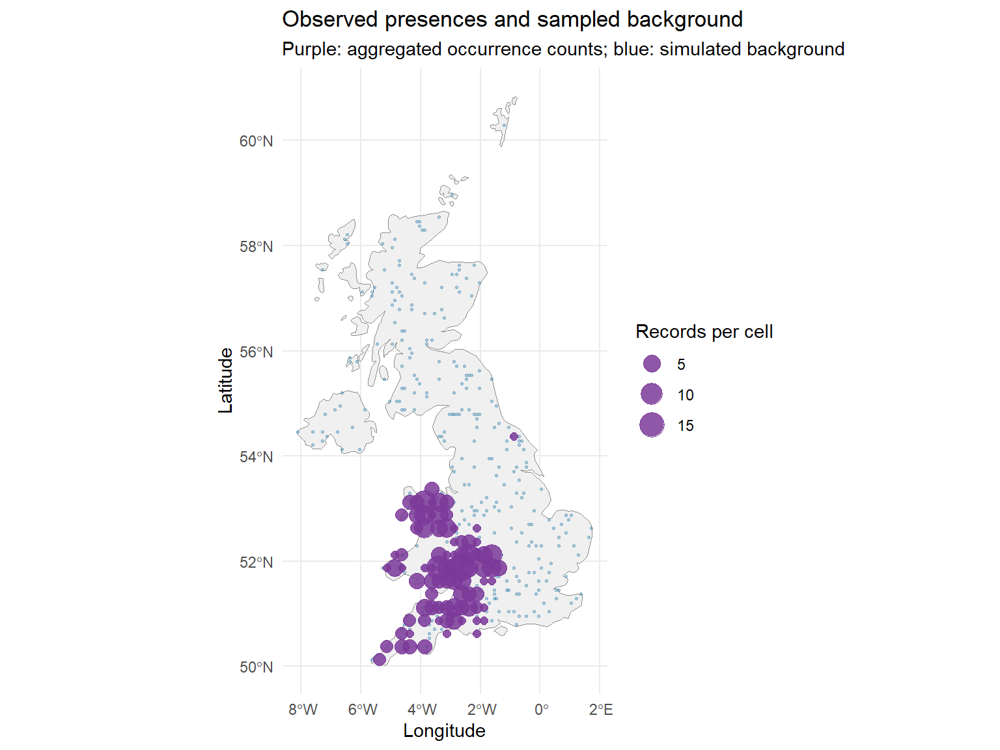
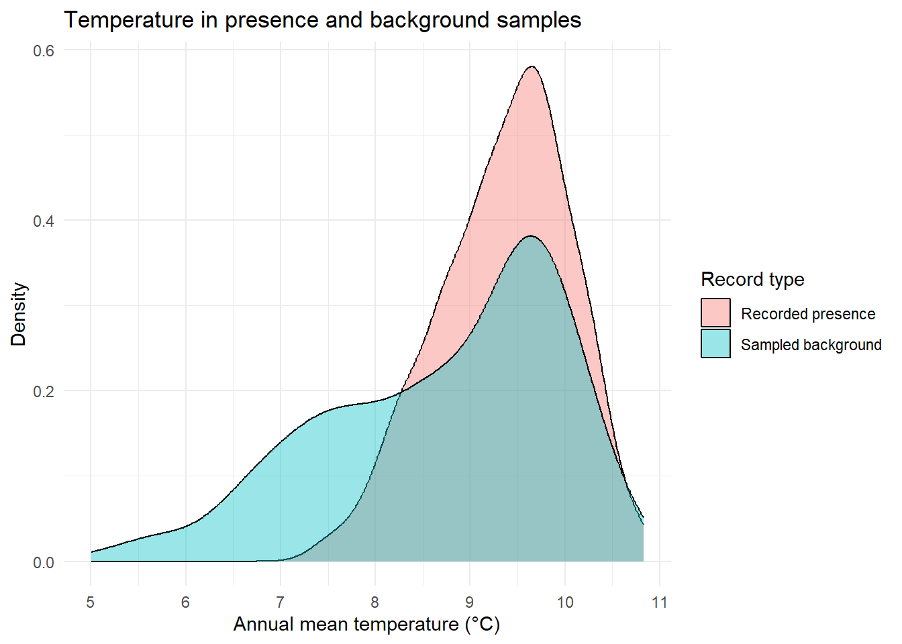

library(terra) # Raster alignment and extracting predictors
library(sf) # Spatial points and study-area boundaries
library(ggplot2) # Maps and data exploration
library(CoordinateCleaner) # Occurrence-coordinate checks
required_files <- c(
"data/workshop_data.RData",
"data/Clim_UK.tif",
"data/Elev_UK.tif"
)
stopifnot(all(file.exists(required_files)))
load("data/workshop_data.RData")
Clim_UK <- terra::rast("data/Clim_UK.tif")
Elev_UK <- terra::rast("data/Elev_UK.tif")
stopifnot(inherits(UK_sf, "sf"))
stopifnot(all(c("bio_1", "bio_12") %in% names(Clim_UK)))
stopifnot(all(c("decimalLongitude", "decimalLatitude") %in%
names(occ_df_rhinhipp)))Background and Pseudo-Absence Data
Defining available environments and preparing data for SDMs
Why do species distribution models need comparison locations?
Species occurrence records tell us where a species has been observed, but often provide little information about where it was searched for and not found. To relate occurrences to environmental conditions, many species distribution models (SDMs) compare observed presences with conditions sampled elsewhere in a defined study region.
A background location is not a confirmed species absence. It represents an available location or environmental condition chosen for comparison. Some modelling approaches instead use pseudo-absences: locations assigned a working label of absence despite lacking direct evidence that the species was absent. The distinction, and the way these locations are selected, affects how we interpret model outputs.
TipLearning outcomes
By the end of the core practical, you should be able to:
- Distinguish presence records, survey non-detections, confirmed absences, background locations and pseudo-absences.
- Explain how the study area and observation effort influence the comparison between presences and background locations.
- Generate reproducible random background samples in a specified sampling region.
- Extract the same environmental predictors for presences and background locations, ready for the first GLM.
Optional research extensions: introduce distance-constrained background sampling and target-group records as alternative sampling strategies.
Start in your own RStudio project
Open the project folder created on the workshop homepage, and continue adding code and explanatory comments to your own .R script. This chapter uses the supplied occurrence snapshot and the historical climate and elevation files. There is no need to query GBIF or download new rasters during the core practical.
This setup is shown so that you can start this page independently, even if you did not run all the preceding chapters in the same R session.
1. Presences, non-detections, absences and background
| Data type | What does it mean? | What should you not assume? |
|---|---|---|
| Presence | A species was detected or recorded at a location. | That other locations were surveyed equally thoroughly. |
| Survey non-detection | The species was not detected during a survey visit. | That the species was certainly absent. |
| Supported absence | Survey design and evidence support an absence interpretation for a defined place and time. | That detection is perfect under all circumstances. |
| Background | A sampled location representing environments available for comparison. | That the species was absent there. |
| Pseudo-absence | A model-assigned ‘absence’ label without a confirmed absence observation. | That the assigned label is biological ground truth. |
The difference matters for the next chapter. Our introductory GLM uses a column called pa containing 1 for a recorded presence and 0 for a sampled background location. The 0 label is convenient for fitting a binary statistical model, but it does not turn a background point into a confirmed absence. The model learns a contrast between the particular presence and background samples; its fitted values should not automatically be interpreted as the true probability that the species occupies a location.
NoteWhy are reliable absences difficult to establish?
- Detection is imperfect: A species may be present but not observed during a survey, particularly when it is cryptic, seasonal or mobile.
- Survey design matters: Repeat visits, survey effort and sampling conditions determine how informative non-detections are.
- Space and time matter: Absence at a site on one occasion does not imply absence at every time or spatial scale.
Field surveys designed to estimate detectability or occupancy can provide stronger evidence than opportunistic occurrence databases. In many presence-only SDMs, however, background points are used instead of verified absences.
2. Define a study region and prepare the focal presences
The study region defines which conditions are treated as available to the species in our analysis. It should ultimately reflect accessible environments, biological history, dispersal, sampling processes and the study question, not just a convenient political boundary.
Core practical. For this teaching example, we use the supplied UK boundary. This is a transparent starting point and sensible for this national-scale example, not a claim that the UK is the biologically optimal accessible area for the lesser horseshoe bat (Rhinolophus hipposideros).
2.1 Recreate the cleaned occurrence dataset
The Species Data chapter introduced the coordinate-cleaning decisions. The following code reproduces those same selected tests from the saved snapshot, so that this page can also run independently. Keep your raw data unchanged; automated flags are aids to review, not proof of ecological error.
occ_valid <- as.data.frame(occ_df_rhinhipp)
# Check geographic coordinate ranges before spatial conversion.
occ_valid$decimalLongitude <- suppressWarnings(
as.numeric(as.character(occ_valid$decimalLongitude))
)
occ_valid$decimalLatitude <- suppressWarnings(
as.numeric(as.character(occ_valid$decimalLatitude))
)
valid_coords <- with(occ_valid,
is.finite(decimalLongitude) & is.finite(decimalLatitude) &
decimalLongitude >= -180 & decimalLongitude <= 180 &
decimalLatitude >= -90 & decimalLatitude <= 90
)
occ_valid <- occ_valid[valid_coords, , drop = FALSE]
if (!"species" %in% names(occ_valid)) {
occ_valid$species <- "Rhinolophus hipposideros"
}
occ_valid$species <- as.character(occ_valid$species)
occ_valid$species[is.na(occ_valid$species) |
!nzchar(occ_valid$species)] <-
"Rhinolophus hipposideros"
occ_rhinhipp_flags <- CoordinateCleaner::clean_coordinates(
x = occ_valid,
lon = "decimalLongitude",
lat = "decimalLatitude",
species = "species",
tests = c("centroids", "duplicates", "equal",
"gbif", "institutions", "zeros"),
inst_rad = 10000,
value = "spatialvalid",
verbose = FALSE
)
flag_summary <- as.logical(occ_rhinhipp_flags$.summary)
flag_summary[is.na(flag_summary)] <- FALSE
occ_rhinhipp_cleaned <- occ_valid[flag_summary, , drop = FALSE]
cat("Records passing the selected checks:",
nrow(occ_rhinhipp_cleaned), "\n")Records passing the selected checks: 355 stopifnot(nrow(occ_rhinhipp_cleaned) > 0)Inspect: Compare this count with your result from the Species Data chapter. If it differs, have the starting snapshot or cleaning choices changed?
2.2 Create spatial points and identify usable presences
A location is usable for our three-predictor GLM only if it lies inside the study region and has valid environmental values. To make each page reproducible on its own, we also reproduce the environmental alignment from Environmental Data.
# Match continuous elevation to the historical climate grid.
climate_template <- Clim_UK[["bio_1"]]
if (!terra::same.crs(Elev_UK, climate_template)) {
Elev_UK_aligned <- terra::project(
Elev_UK, climate_template, method = "bilinear"
)
} else {
Elev_UK_aligned <- terra::resample(
Elev_UK, climate_template, method = "bilinear"
)
}
names(Elev_UK_aligned) <- "elevation"
Env_UK_stack <- c(Clim_UK, Elev_UK_aligned)
env_stack <- Env_UK_stack
model_predictors <- c("bio_1", "bio_12", "elevation")
proj_stack <- env_stack[[model_predictors]]
stopifnot(terra::compareGeom(proj_stack[[1]],
proj_stack[["elevation"]]))
names(proj_stack)[1] "bio_1" "bio_12" "elevation"study_area <- sf::st_transform(UK_sf, terra::crs(proj_stack))
# Only the columns needed for this model are carried forward.
presence_columns <- intersect(
c("species", "key", "decimalLongitude", "decimalLatitude"),
names(occ_rhinhipp_cleaned)
)
presence_sf <- sf::st_as_sf(
occ_rhinhipp_cleaned[, presence_columns, drop = FALSE],
coords = c("decimalLongitude", "decimalLatitude"),
crs = 4326
)
presence_sf <- sf::st_transform(
presence_sf, sf::st_crs(study_area)
)
# Retain points that intersect the UK study region.
inside_region <- lengths(sf::st_intersects(
presence_sf, study_area
)) > 0
presence_sf <- presence_sf[inside_region, , drop = FALSE]
# Retain points with all three predictors available.
presence_values <- terra::extract(
proj_stack, terra::vect(presence_sf), ID = FALSE
)
usable_presence <- stats::complete.cases(presence_values)
presence_sf <- presence_sf[usable_presence, , drop = FALSE]
presence_values <- presence_values[usable_presence, , drop = FALSE]
n_presence <- nrow(presence_sf)
stopifnot(n_presence > 0)
cat("Presences inside the study region with predictor values:",
n_presence, "\n")Presences inside the study region with predictor values: 309 Inspect: Why might some valid occurrence coordinates still lack an environmental value? Consider coastal cells, the boundary of the raster and incomplete environmental coverage.
3. Generate random background locations
Core practical. We start with a simple design: draw approximately as many background locations as we have usable presences, using a fixed random seed. This is a teaching choice that simplifies comparison, not a universal rule about the correct presence-to-background ratio.
We sample from cells inside the study region where all three predictors are available. Sampling from a bounding rectangle without checking the environmental layers could generate ‘ocean’ or missing-value locations that are later discarded without explanation.
# Identify cells with complete BIO1, BIO12 and elevation values.
valid_predictor_cells <- terra::ifel(
!is.na(proj_stack[["bio_1"]]) &
!is.na(proj_stack[["bio_12"]]) &
!is.na(proj_stack[["elevation"]]),
1, NA
)
# Restrict available cells to the UK boundary.
sampling_raster <- terra::mask(
valid_predictor_cells, terra::vect(study_area)
)
# A fixed seed makes background selection reproducible.
set.seed(2026)
n_background <- n_presence
background_points <- terra::spatSample(
sampling_raster,
size = n_background,
method = "random",
replace = FALSE,
na.rm = TRUE,
as.points = TRUE,
values = FALSE,
exhaustive = TRUE
)
background_sf <- sf::st_as_sf(background_points)
background_sf$type <- "background"
# Verify the selected cells contain the required predictors.
background_values <- terra::extract(
proj_stack, terra::vect(background_sf), ID = FALSE
)
stopifnot(nrow(background_sf) == n_background,
all(stats::complete.cases(background_values)))
cat("Random background locations:", nrow(background_sf), "\n")Random background locations: 309 Inspect: What does set.seed(2026) achieve? Why did we sample only valid environmental cells? Why should we avoid claiming that a sampled background location is a confirmed absence? A background cell may even coincide with a cell containing a presence; that does not turn the background sample into a verified absence.
Change: Replace 2026 with another integer and rerun the background-sampling code. Do the selected locations change? Does the number of points change?
3.1 Compare the spatial distributions
The map below shows background points and aggregated counts of focal-species records in approximate 0.25° cells. It does not publish exact bat occurrence coordinates or roost locations. The synthetic background points themselves are not species observations.
# Aggregate occurrence locations for a public teaching map.
pres_xy <- sf::st_coordinates(
sf::st_transform(presence_sf, 4326)
)
grain <- 0.25
presence_cells <- data.frame(
lon = floor(pres_xy[, 1] / grain) * grain + grain / 2,
lat = floor(pres_xy[, 2] / grain) * grain + grain / 2
)
presence_counts <- stats::aggregate(
rep(1L, nrow(presence_cells)),
by = presence_cells, FUN = sum
)
names(presence_counts)[3] <- "n"
back_xy <- sf::st_coordinates(sf::st_transform(
background_sf, 4326
))
background_map <- data.frame(
lon = back_xy[, 1], lat = back_xy[, 2]
)
ggplot() +
geom_sf(data = sf::st_transform(study_area, 4326),
fill = "grey94", colour = "grey55") +
geom_point(data = background_map,
aes(x = lon, y = lat),
colour = "#287aa8", alpha = 0.35, size = 0.6) +
geom_point(data = presence_counts,
aes(x = lon, y = lat, size = n),
colour = "#7b3999", alpha = 0.85) +
scale_size_continuous(name = "Records per cell", range = c(2, 7)) +
coord_sf() +
labs(title = "Observed presences and sampled background",
subtitle = "Purple: aggregated occurrence counts; blue: simulated background",
x = "Longitude", y = "Latitude") +
theme_minimal()
Think about: If the occurrence data are concentrated around places where people look for bats, could a model confuse recording effort with environmental preference? What features of the map suggest that the two sampling processes may be different?
4. Extract environmental values and assemble model data
Core practical. The next GLM chapter will use the same three environmental variables for both sets of locations: annual mean temperature (bio_1), annual precipitation (bio_12) and elevation. The input labels are 1 for a recorded presence and 0 for a sampled background location.
# The predictor values were extracted above for the same grid.
# Keep spatial objects for maps and a plain data frame for modelling.
presence_data <- sf::st_sf(
pa = rep(1L, nrow(presence_sf)),
presence_values,
geometry = sf::st_geometry(presence_sf)
)
background_data <- sf::st_sf(
pa = rep(0L, nrow(background_sf)),
background_values,
geometry = sf::st_geometry(background_sf)
)
sdm_data <- rbind(presence_data, background_data)
sdm_df <- sf::st_drop_geometry(sdm_data)
sdm_df_clean <- sdm_df[stats::complete.cases(sdm_df), , drop = FALSE]
sdm_df_clean$pa <- as.integer(sdm_df_clean$pa)
stopifnot(all(c("pa", model_predictors) %in%
names(sdm_df_clean)))
stopifnot(all(sdm_df_clean$pa %in% c(0L, 1L)))
# Look at the number of records of each type and predictor summaries.
table(sdm_df_clean$pa)
0 1
309 309 head(sdm_df_clean) pa bio_1 bio_12 elevation
1 1 8.846875 959 192.7865
2 1 8.772500 1302 297.8839
3 1 8.647291 1462 325.7128
4 1 9.087000 1252 240.1276
5 1 8.569375 1497 327.2693
6 1 7.647750 1410 381.5713summary(sdm_df_clean[, model_predictors, drop = FALSE]) bio_1 bio_12 elevation
Min. : 5.002 Min. : 519.0 Min. : 2.995
1st Qu.: 8.474 1st Qu.: 764.0 1st Qu.: 79.963
Median : 9.312 Median : 956.5 Median :132.167
Mean : 9.037 Mean :1038.4 Mean :159.056
3rd Qu.: 9.768 3rd Qu.:1225.2 3rd Qu.:208.366
Max. :10.828 Max. :2541.0 Max. :614.965 Here, sdm_df_clean is the model-ready data frame for the introductory GLM. It preserves the names expected by the next chapter. proj_stack contains the three aligned rasters needed to map the fitted model’s predictions. Students proceeding directly to the next chapter in the same R session can reuse these objects; the next chapter should also provide its own explicit setup for independent study.
4.1 Compare the environmental conditions sampled
plot_df <- sdm_df_clean # Keep the modelling data unchanged.
plot_df$record_type <- ifelse(
plot_df$pa == 1L, "Recorded presence", "Sampled background"
)
ggplot(plot_df,
aes(x = bio_1, fill = record_type)) +
geom_density(alpha = 0.4, na.rm = TRUE) +
labs(title = "Temperature in presence and background samples",
x = "Annual mean temperature (°C)",
y = "Density", fill = "Record type") +
theme_minimal()
Inspect: Are temperature values distributed in the same way among presences and background locations? This describes the sampled contrast, not a causal effect of temperature or a validated habitat preference.
Change: Replace bio_1 with bio_12 or elevation. Which contrast appears strongest? How could the sampling region or uneven survey effort contribute to that pattern?
TipOptional: save a modelling checkpoint
To resume the exercises in a fresh R session without repeating every background-sampling step, you may save the resulting teaching data and the three-predictor raster. Your own annotated R script remains the record of how those objects were created.
dir.create("data/checkpoints", recursive = TRUE,
showWarnings = FALSE)
saveRDS(sdm_df_clean,
"data/checkpoints/sdm_training_data.rds")
terra::writeRaster(
proj_stack,
"data/checkpoints/SDM_predictors_current.tif",
overwrite = TRUE
)
# To load them in a new R session:
# sdm_df_clean <- readRDS("data/checkpoints/sdm_training_data.rds")
# proj_stack <- terra::rast("data/checkpoints/SDM_predictors_current.tif")The checkpoint is a convenience, not a substitute for retaining the code, selection criteria and data sources that produced it.
5. Optional research extension: distance-constrained background
One alternative is to sample comparison locations within a specified distance of observed presences. This changes the environments regarded as available for comparison. It may better reflect the geographic footprint of sampling in some studies, but it can also restrict the contrast too strongly. A buffer around presences does not automatically correct observer bias or define the species’ accessible area.
The optional code below uses a 5 km buffer in a projected CRS with metre units.
# Use a metric coordinate system before measuring buffer distances.
metric_crs <- "EPSG:27700" # British National Grid
presence_metric <- sf::st_transform(presence_sf, metric_crs)
uk_metric <- sf::st_transform(study_area, metric_crs)
# Construct a sampling region at most 5 km from a recorded presence.
buffer_5km <- sf::st_union(sf::st_buffer(presence_metric, dist = 5000))
buffer_domain <- sf::st_intersection(
buffer_5km,
sf::st_union(sf::st_geometry(uk_metric))
)
set.seed(2222)
candidate_points <- sf::st_sf(
geometry = sf::st_sample(buffer_domain, size = n_background * 4)
)
candidate_points <- sf::st_transform(
candidate_points, sf::st_crs(study_area)
)
# Keep only candidates with complete environmental predictors.
candidate_values <- terra::extract(
proj_stack, terra::vect(candidate_points), ID = FALSE
)
candidate_points <- candidate_points[
stats::complete.cases(candidate_values), , drop = FALSE
]
if (nrow(candidate_points) < n_background) {
stop("Too few valid buffered candidates; revise the sampling design.")
}
background_constr_sf <- candidate_points[
seq_len(n_background), , drop = FALSE
]
# Compare sampling regions; this does not automatically fit a new model.
plot(sf::st_geometry(uk_metric), col = "grey95")
plot(buffer_domain, add = TRUE, col = "lightblue", border = NA)
plot(sf::st_geometry(presence_metric), add = TRUE, pch = 16,
col = "#7b3999", cex = 0.4)Change: Try buffers of 1, 5 and 10 km. How do the geographical and environmental contrasts change? What biological or sampling information could justify one distance over another?
6. Optional research extension: target-group background
When records come from opportunistic observation systems such as GBIF, the locations where other species in a similarly surveyed group were recorded may help characterise observer effort. For example, we can compare focal lesser horseshoe bat records with occurrences of other bat species.
A target group should be selected based on similar recording methods, geography and time periods; taxonomic similarity alone is not sufficient. Target-group records are not confirmed absences of the focal species.
6.1 Explore the supplied target-group records
The workshop snapshot includes target_group_sf, created during data preparation. Using it avoids requiring a new GBIF query during the practical. This is a demonstration, not the background method used for the introductory GLM above.
stopifnot(exists("target_group_sf"), inherits(target_group_sf, "sf"))
target_group_uk <- sf::st_transform(
target_group_sf, sf::st_crs(study_area)
)
# Review species identities; exclude any focal-species records.
if ("species" %in% names(target_group_uk)) {
target_group_uk <- target_group_uk[
is.na(target_group_uk$species) |
target_group_uk$species != "Rhinolophus hipposideros", ,
drop = FALSE
]
}
in_region <- lengths(sf::st_intersects(
target_group_uk, study_area
)) > 0
target_group_uk <- target_group_uk[in_region, , drop = FALSE]
target_values <- terra::extract(
proj_stack, terra::vect(target_group_uk), ID = FALSE
)
target_group_uk <- target_group_uk[
stats::complete.cases(target_values), , drop = FALSE
]
nrow(target_group_uk)
# Compare spatial concentrations using aggregated maps,
# as in the Species Data chapter; avoid publishing precise roost locations.6.2 Retrieve a target group from GBIF yourself
The following optional query illustrates the independent acquisition route. Its results can change over time, and a small search result is not a complete or bias-free survey of British bats. Inspect names, dates, sources and duplicate records before treating this as a sampling-effort proxy.
library(rgbif)
bat_match <- rgbif::name_backbone(
name = "Chiroptera", kingdom = "Animalia"
)
stopifnot("usageKey" %in% names(bat_match),
!is.na(bat_match$usageKey[1]))
bat_search <- rgbif::occ_search(
taxonKey = bat_match$usageKey[1],
country = "GB",
hasCoordinate = TRUE,
limit = 500
)
bat_df <- bat_search$data
# Remove focal-species records and rows without coordinates.
bat_df <- bat_df[
!is.na(bat_df$species) &
bat_df$species != "Rhinolophus hipposideros" &
!is.na(bat_df$decimalLongitude) &
!is.na(bat_df$decimalLatitude), , drop = FALSE
]
# Inspect source, date, coordinate uncertainty and taxonomy
# before any use in an SDM.
head(bat_df)For a research project, document the taxonomic checklist and rgbif version, select a defensible target group and preserve a citable GBIF download. See Species Data and Data Preparation.
NoteBackground choice is part of the scientific hypothesis
There is no universally optimal background or pseudo-absence strategy. Random sampling represents one definition of environmental availability; distance-constrained sampling changes that definition; target-group selection tries to reflect aspects of the recording process. Each can produce a different fitted relationship.
A research analysis should justify its geographic sampling region, background strategy, sample size and treatment of observation bias. It should then assess sensitivity to reasonable alternatives and, where feasible, use spatially separated evaluation. Comparing training accuracy alone does not resolve these choices.
7. Practise, interpret and extend
NoteCore practical — complete these before fitting the GLM
- Explain in one or two sentences why a randomly sampled background point is not a confirmed absence.
- Run the random background example twice with the same seed. Check that your points agree, then change the seed.
- Inspect
table(sdm_df_clean$pa)andnames(sdm_df_clean). Which column identifies the modelling labels, and which columns contain environmental predictors? - Compare temperature or precipitation between presence and background samples. Record one ecological interpretation and one alternative explanation involving sampling in your R script.
Optional research extensions
- Compare a random background with 1 km, 5 km and 10 km buffers. Which environments become available for comparison?
- Examine the supplied target-group data. Do the records represent a recording process comparable with the focal species?
- Consider how a different accessible region, unequal sample sizes or spatially biased survey effort could change the estimated response curves.
- For research using field survey non-detections, investigate methods that explicitly model detectability instead of relabelling all non-detections as absences.
Further reading
- Phillips et al. (2009). Sample selection bias and presence-only distribution models: implications for background and pseudo-absence data.
- Barbet-Massin et al. (2012). Selecting pseudo-absences for species distribution models: how, where and how many?.
- Kramer-Schadt et al. (2013). The importance of correcting for sampling bias in MaxEnt species distribution models.
- Steen et al. (2021). Spatial thinning and class balancing: key choices lead to variation in SDM performance.
- terra spatial sampling documentation.
Next: Continue to Model Fitting: GLMs. We will use sdm_df_clean to fit and assess a first model, while remembering that its 0 labels represent sampled background locations, not verified absences.